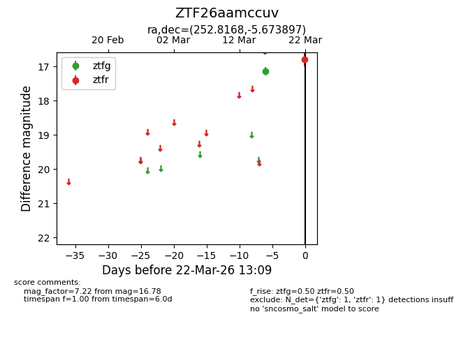
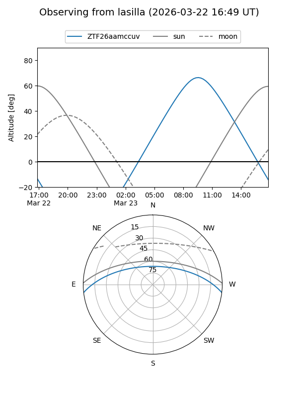
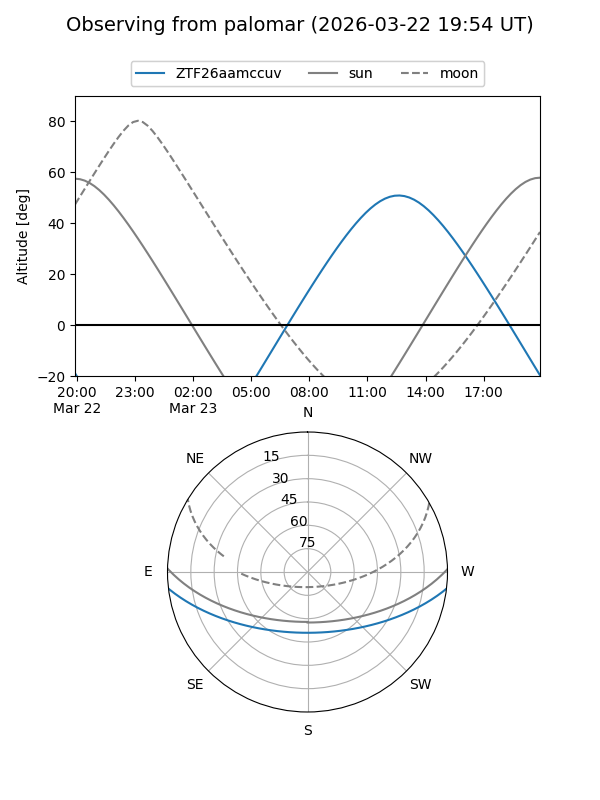

ZTF26aamccuv
Target ZTF26aamccuv at 2026-03-22 13:11
Aliases and brokers:
FINK: link
Lasair: link
ALeRCE: link
alt names
ZTF26aamccuv (ztf,fink_ztf)
Coordinates:
equatorial (ra, dec) = 252.8168,-5.67390
equatorial (HMS+DMS) = 16:51:16.03,-05:40:26.03
galactic (l, b) = (12.8363,+23.47219)
Flags:
Photometry:
last ztfg=17.14, ztfr=16.78
1 ztfg, 1 ztfr detections
Lightcurve

Visibility


Additional plots